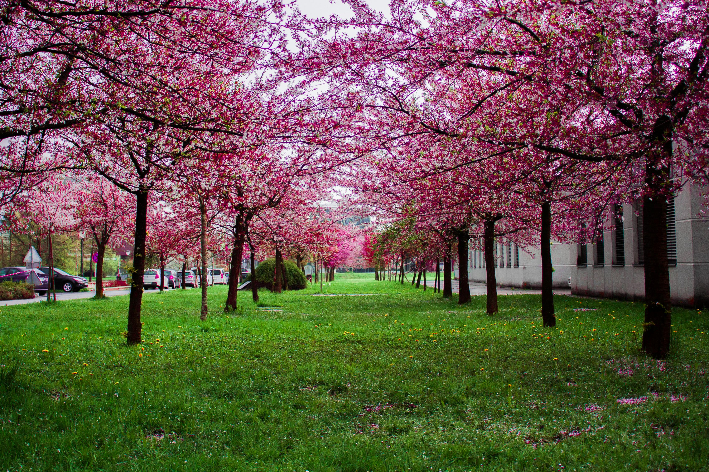

I am a Creative web design
Writing efficient code using best practice for software development
Creating websites using different languages such as HTML and CSS
Working with Programmers and Web Designers to create a website that matches the visual design intent
Communicating with business colleagues to gather and refine requirements and specifications for content development within agreed-upon timelines
Researching a variety of software programs
Creating and maintaining the documentation for software used
Improving and enhancing websites after they have been created
Seasoned web developer with a strong focus on innovation and user-centric design.
Brings extensive experience in crafting responsive, mobile-friendly websites that
deliver exceptional user experiences. Specialized in optimizing website performance and
implementing the latest technologies. Proven ability to lead development
teams and communicate complex technical concepts to non-technical stakeholders.
Developing contingency plans in the event of websites going down

Beauty
We strive to create the most beautiful websites for all your needs. Working closely with you to design and develop an amazing website for your business
construction
Built by our team of professional developers, we ensure the most rigourous and modern websites. Built from scratch using HTML and CSS. Only the best for you.

nice view
It is a golden maxim to cultivate the garden for the nose, and the eyes will take care of themselves

beautiful garden
God Almighty first planted a garden. And indeed, it is the purest of human pleasures.

Trees
The love of gardening is a seed once sown that never dies, but never grows to the enduring
happiness that the love of gardening gives.

flowers
The garden suggests there might be a place where we can meet nature halfway.

fantastic view
The glory of gardening: hands in the dirt, head in the sun, heart with nature. To nurture a garden is to feed not just the body, but the soul.
We have all you need for your website to look better
you are all welcome